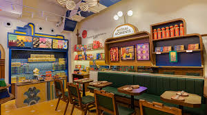

We are a gourmet cupcake bakery and creamery, and we bake and frost 18 signature flavors every morning, fresh from scratch. Our menu features seasonal and unique flavors created by Jeff Martin, the founder of Smallcakes.
Our Story: Smallcakes Fort Myers is owned and operated by Don and Tonyia Moyer, a local couple, and is dedicated to bringing you the most memorable cupcake and creamery experience. We are located in the beautiful Gulf Coast town of Fort Myers and have been serving the community since 2013.
Featured on TV: Smallcakes has proven to be a nationwide success. Our cupcake bakery has been featured for three seasons running on the Food Network's "CUPCAKE WARS", an appearance on ABC'S hit daytime talk show, "THE VIEW", and was selected as a "Must Try Cupcake Shop" by USA TODAY. We are honored to have the opportunity to bring gourmet cupcakes to the Southwest Florida community.
Made Fresh, With Care: We make our gourmet cupcakes on-site every day using only the highest quality ingredients, and we sweeten them with love! We also provide personalized cakes for weddings, birthdays, baby showers, business gatherings, and any other special occasion. With a delectable cake that looks as good as it tastes, we aim to make your event one to remember
What We Offer: We offer a variety of gourmet cupcakes, custom cakes, cheesecake, and other sweet treats. Our menu is updated seasonally, so there's always something new to try. We also offer gluten-free and vegan options, so everyone can enjoy our delicious cupcakes.